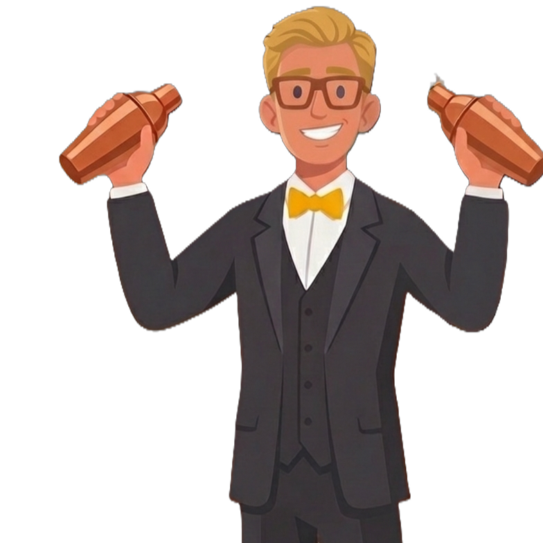
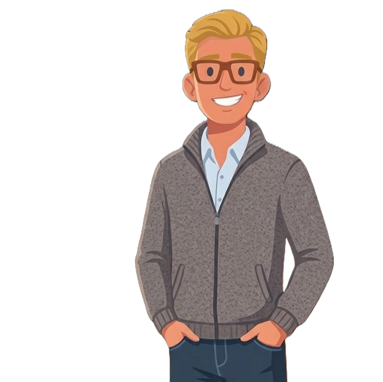

Introduction
My name is Joao Pedro Luz Rodrigues. This is an introductory e-portfolio/website to briefly present my skills, employment background, qualifications, and also introduce who I am and my goals. I am from Brazil. I came to Ireland in 2023 to improve my English skills and to strive for a better life. I am currently undertaking a Bachelor of Science (BSc) in Computing at Dublin Business School (DBS), and I am eager to begin my professional career at the earliest opportunity.
I invite you to explore this portfolio and learn more about my experiences and development.

Work Background
Waiter
Jan/2026 - Currentl Working
Pitt Bros
As a waiter at Pitt Bros, I am responsible for maintaining the work environment, taking and serving orders, and ensuring customers’ well-being. If any issues arise with the food or customer experience, I take responsibility for resolving them or finding a suitable solution that meets the customers’ needs.
Barista
April/2024 - Jan/2026
KSG
My duties at KSG as a Barista included fulfilling coffee orders, taking customer orders, and maintaining a clean and organised work environment at all times. I was also responsible for restocking pastries and drinks throughout the day and, most importantly, ensuring that customers’ needs were consistently met.
Bartender
Dec/2022 - Jan/2023
Porto Imbe
This job was in Brazil, where I prepared a variety of Brazilian drinks as well as well-known beverages such as Mojitos, Cuba Libre, and Aperol Spritz. It was a very enjoyable first employment experience, during which I learned the fundamentals of customer service and developed a strong foundation in essential soft skills.

Volunteer Expiriences

Project to Teach Robotics
Jun/2021 - Dec/2021
Instituto Federal Do Rio Grande do Sul
This Project was the most facinating project I have been in, we planned classes of basic robotics and programing in arduino for the refreshers of the year 2021, we taught a lot of different concepts and maneged to develop several projects with the studants.
Career Goals
Main Goals
I have many aspirations in life, as I am a very ambitious person who strives to achieve significant goals. However, the most important priority for me is to continue improving myself and to remain focused on what makes me happy.
Get my driver's Licence
Build a strong Linkedin Profile
Graduate as First class Hnours
Marry my girlfriend